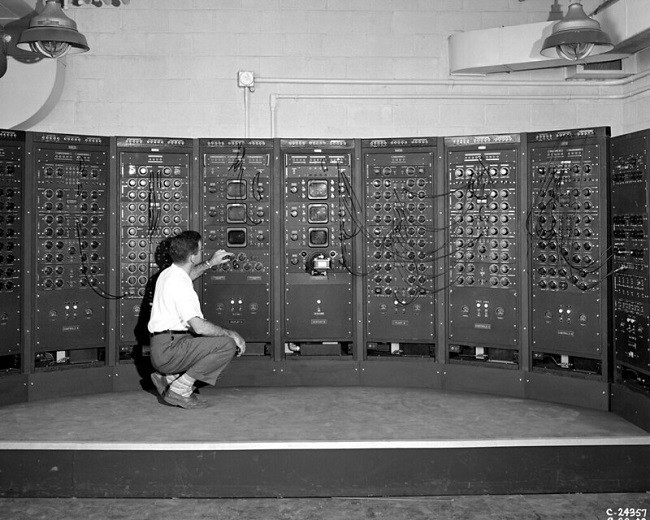

Historia Del Hardware

Presentado Por: Juan Sebastian Garcia Redondo, Nicolas Velasquez Y Juan David Pardo
Década de 1940

Durante esta década, las primeras computadoras electrónicas comenzaron a utilizar tubos de vacío como componentes principales. Estas computadoras ocupaban habitaciones enteras y eran muy grandes y costosas.
Computadora Con tubos de vacio Como componentes electronicos

Década de 1950
En esta década, se introdujeron las primeras computadoras comerciales de gran escala. Se continuó utilizando tubos de vacío, pero se desarrollaron métodos de almacenamiento magnético, como cintas magnéticas y tambores magnéticos.
Monitores

Se desarrollan los primeros monitores de tubo de rayos catódicos (CRT) para visualizar información generada por computadoras. Estos monitores utilizaban tubos de vacío y se limitaban a mostrar texto y gráficos básicos.
Década de 1960

En esta época, se comenzaron a utilizar transistores en lugar de tubos de vacío. Los transistores eran más pequeños, más rápidos y más confiables, lo que permitió la creación de computadoras más compactas y potentes.
Década de 1970
Durante esta década, se produjo una transición importante hacia los circuitos integrados (chips). Los circuitos integrados permitieron incluir varios componentes en un solo chip, lo que resultó en una mayor eficiencia y reducción de costos.
Monitores
Se introducen los monitores CRT en color, lo que permite una representación visual más vívida y detallada. Estos monitores se vuelven populares en aplicaciones gráficas y de diseño.
Procesadores

A partir de 1973 aparecieron los microprocesadores Intel los cuales son 8086, 8088, 286,
estos ordenadores eran conocidos como ordenadores AT y XT, estos eran de 8 o 16 bits
tanto internos como externos.
Este número reducido de bits limitaba sus posibilidades en
gran medida, luego aparecieron versiones mejoradas como 386, 386 SX que su principal
ventaja es que en su interior tenía 32 bits y su exterior
Década de 1980


En esta década, se popularizó el uso de microprocesadores. Los microprocesadores, como el Intel 8086 y el Motorola 68000, permitieron un procesamiento más rápido y se convirtieron en el corazón de las computadoras personales.
Monitores
Los monitores CRT experimentan mejoras significativas en la calidad de la imagen y la resolución. Se introducen los primeros monitores de alta resolución, permitiendo una visualización más nítida y detallada.
Procesadores
Luego aparecieron en 1986 los microprocesadores 486, 486 SX, DX, DX2 y DX4, la
mejora consistían en que eran depurados y que tenían un coprocesador matemático para
coma flotante integrado y una memoria cache de 8kb.
Las compañías Cyrix y AMD no se quedaron atrás crearon un dispositivo muy bueno con
una memoria cache 16kb con una frecuencia de 120Mhz. Después la familia Intel elaboro
el procesador Pentium, el nombre se debía porque Intel quería que se diferenciara con los
de la competencia.
Década de 1990

Durante esta década, se produjo un rápido avance en la capacidad de almacenamiento. Los discos duros se volvieron más grandes y más accesibles, mientras que los discos ópticos, como los CD y los DVD, se convirtieron en medios de almacenamiento comunes.
Monitores

Se desarrollan monitores CRT más delgados y livianos, lo que facilita su colocación y transporte. Además, se populariza el estándar VGA (Video Graphics Array), que mejora la calidad de imagen y permite una mayor variedad de colores.
Procesadores
Durante la década de 1990 a 2000, se produjeron avances significativos en el campo de los procesadores de computadoras, sentando las bases para el desarrollo tecnológico de la época. Uno de los procesadores más destacados fue el Intel 486, lanzado a finales de la década de 1980, pero que tuvo un impacto relevante en los años 90 al introducir la arquitectura de 32 bits en las PC. Sin embargo, fue el Intel Pentium, lanzado en 1993, el que se convirtió en un hito de la industria, ofreciendo un rendimiento mejorado y una mayor capacidad de manejo de instrucciones.
AMD también dejó su huella con el lanzamiento del AMD K6 en 1997, una alternativa competitiva a los procesadores de Intel, destacando por su rendimiento sólido en aplicaciones multimedia. Ese mismo año, Intel presentó el Pentium II, que introdujo la tecnología de caché de nivel 2 y mejoró el rendimiento en aplicaciones exigentes. En 1999, AMD presentó el Athlon, que ofreció un rendimiento sólido en aplicaciones de computación intensiva y juegos.
Década de 2000
En esta época, se popularizaron las memorias flash, como las unidades USB y las tarjetas de memoria. Estas memorias ofrecían capacidades más grandes, tiempos de acceso más rápidos y mayor durabilidad en comparación con las tecnologías de almacenamiento anteriores.
Monitores

Se comienza a adoptar la tecnología de pantallas de cristal líquido (LCD) en monitores. Los monitores LCD son más delgados, livianos y eficientes energéticamente en comparación con los CRT. Los monitores LCD experimentan mejoras en la calidad de imagen, resolución y tiempo de respuesta. Se introducen monitores de pantalla ancha (16:9) que se adaptan a la creciente demanda de visualización de contenido multimedia.
Procesadores

Durante la década del 2000 al 2010, el campo de los procesadores de computadoras experimentó numerosos avances que marcaron un hito en la industria tecnológica. Algunos de los procesadores más destacados de esa época incluyen el Intel Pentium 4, lanzado en 2000, que introdujo tecnologías innovadoras como NetBurst y Hyper-Threading, mejorando el rendimiento y las velocidades de reloj. En 2001, AMD lanzó la línea de procesadores Athlon XP, basados en la arquitectura "Palomino", ofreciendo un rendimiento competitivo en comparación con los de Intel. En 2003, el Pentium M de Intel, diseñado para portátiles, se destacó por su eficiencia energética y sólido rendimiento en dispositivos móviles. El mismo año, AMD lanzó el Athlon 64, uno de los primeros procesadores de 64 bits disponibles para el público en general, con mejor rendimiento y mayor capacidad de direccionamiento de memoria.
Década de 2010
Durante esta década, se produjo un aumento en el uso de unidades de estado sólido (SSD). Los SSD ofrecen velocidades de lectura y escritura mucho más rápidas en comparación con los discos duros tradicionales, lo que resulta en un mejor rendimiento general del sistema.
Monitores

Se desarrollan monitores LCD con retroiluminación LED, que ofrecen una mejor calidad de imagen, mayor brillo y un consumo de energía más eficiente. También se popularizan los monitores con tecnología táctil, que permiten la interacción directa con la pantalla.
Procesadores

Durante la década de 2010 a 2020, se produjeron avances notables en el campo de los procesadores de computadoras, impulsando el rendimiento y la eficiencia energética en diversos ámbitos. Intel lanzó varias generaciones de sus procesadores Core i5, i7 e i9, ofreciendo mejoras significativas en términos de rendimiento y soporte para tecnologías avanzadas. Mientras tanto, AMD hizo una fuerte competencia con su serie Ryzen, destacando por su rendimiento multicore y una relación calidad-precio atractiva. En el segmento de servidores y estaciones de trabajo de alto rendimiento, los procesadores Xeon de Intel de las series E5 y E7 ofrecieron múltiples núcleos y capacidades avanzadas. Por otro lado, los procesadores ARM Cortex-A, ampliamente utilizados en dispositivos móviles, ofrecieron un equilibrio entre rendimiento y eficiencia energética. Además, Apple se destacó con su serie de procesadores Apple A, desarrollados específicamente para sus dispositivos, y el lanzamiento del M1 para sus computadoras Mac. Estos procesadores demostraron un rendimiento impresionante, una integración excepcional con el hardware y el software de Apple, y una eficiencia energética notable. En conjunto, los avances en procesadores durante este período sentaron las bases para
Actualidad

En la actualidad se ha producido un enfoque en el desarrollo de componentes más eficientes y de menor consumo de energía. Además, se ha avanzado en tecnologías como la realidad virtual, la inteligencia artificial y el cómputo en la nube, lo que ha influido en la evolución de los componentes de las computadoras.
Monitores
Se producen avances en la tecnología de pantalla, como monitores OLED (diodo orgánico emisor de luz) y monitores con resolución 4K y superior. Estos monitores ofrecen una calidad de imagen excepcional y una reproducción de color precisa.Además, es importante mencionar que en la actualidad también se han desarrollado monitores curvos, monitores con frecuencia de actualización alta para juegos (como 144Hz y 240Hz) y monitores con capacidades HDR (High Dynamic Range), que mejoran aún más la experiencia visual.
Procesadores
Durante el período comprendido entre 2020 y la actualidad, los procesadores de computadoras han experimentado avances significativos en términos de rendimiento y eficiencia. Destacan varios procesadores de renombre en este período que han revolucionado la industria tecnológica. La serie Ryzen 5000 de AMD ha impresionado con su arquitectura Zen 3, ofreciendo un rendimiento líder en la industria en aplicaciones de múltiples núcleos y tareas intensivas. Por su parte, Intel ha presentado las series Core de 10ª y 11ª generación, mejorando la velocidad de reloj y el soporte para tecnologías avanzadas como Intel Turbo Boost y Hyper-Threading. Estos procesadores han sido altamente valorados en aplicaciones de juegos y tareas exigentes. Apple ha dejado su huella con el revolucionario procesador M1, diseñado específicamente para sus dispositivos Mac. Basado en la arquitectura ARM, ha demostrado un rendimiento excepcional y una eficiencia energética impresionante. Además, los procesadores Snapdragon de Qualcomm han liderado la industria de dispositivos móviles, brindando un rendimiento eficiente y conectividad 5G en smartphones y tablets de alta gama. En general, los procesadores de este período han llevado la experiencia informática a nuevos niveles, ofreciendo un rendimiento excepcional, eficiencia energética mejorada y capacidades avanzadas para satisfacer las crecientes demandas de los usuarios y las aplicaciones modernas.
=======
El teclado es un periférico de entrada que se utiliza para ingresar datos y comandos en una computadora u otro dispositivo electrónico. Su función principal es permitir al usuario comunicarse con la máquina a través de la escritura de texto o la introducción de comandos específicos.
Exiten varios tipos de teclados : mecanicos, retroiluminados , inalambricos, numericos, ergonomico y estandar.
El mouse es un periférico de entrada que se utiliza para controlar y manipular el cursor en la pantalla de una computadora. Su función principal es permitir al usuario interactuar con el sistema operativo y los programas mediante movimientos y clics.
Existen varios tipos de mouse : Con cable, inalambrico, laser y optico.
Los audífonos son periféricos de salida utilizados para escuchar audio en una computadora u otro dispositivo electrónico. Su función principal es proporcionar sonido directamente al usuario, permitiéndole disfrutar de música, películas, juegos u otras aplicaciones de audio.
Tipos de audifonos : Deportivos , Inalambricos , con cancelacion de ruido , supraaurales.
El escaner es un periférico de entrada que se usa para para copiar y guardar el contenido de una hoja dentro del computador como una imagen digital. Hay impresoras que vienen con Escáner integrado.
El micrófono es un periférico de entrada utilizado para capturar y grabar sonido en una computadora u otro dispositivo electrónico. Su función principal es convertir las ondas sonoras en señales eléctricas que luego pueden ser procesadas y utilizadas por el sistema.
Los altavoces son periféricos de salida utilizados para reproducir sonido en una computadora u otro dispositivo electrónico. Su función principal es convertir las señales eléctricas de audio en sonido audible para que los usuarios puedan escucharlo.
Perifericos
Teclado

Mouse

Audifonos

Audifonos
![Imagen de un escaner]()
Microfono

Altavoces de sonido
![Imagen de unos altavoces]()